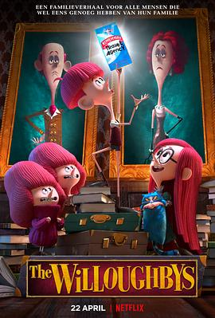

威洛比家的孩子们 / The Willoughbys
又名：威乐比这一家
被音乐圈粉，但是电影非常一般，全剧也只有这一首歌《I choose》
作品信息
| 导演 | 克里斯·皮尔恩 / 科瑞·埃文斯 / 罗布·洛德米尔 |
| 编剧 | 克里斯·皮尔恩 / 洛伊丝·劳里 / Mark Stanleigh |
| 主演 | 威尔·福特 / 马丁·肖特 / 阿莱西娅·卡拉 / 简·科拉克斯基 / 瑞奇·热维斯 / 玛娅·鲁道夫 / 泰瑞·克鲁斯 / 塞恩·库伦 / 珊农·陈-肯特 / 克里斯蒂娜·罗塞托 / 罗宾·罗斯 / 科琳·惠勒 / Rebecca Husain / Bonnie Riley / Islie Hirvonen / Fiona Toth |
| 类型 | 喜剧 / 动画 |
| 制片国家/地区 | 加拿大 |
| 语言 | 英语 |
| 上映日期 | 2020-04-22(加拿大) |
| 片长 | 92分钟 |
| IMDb | tt5206260 |
说过什么
2021-01-14 20:31:49
广播 · 看过 · ★★★☆☆
被音乐圈粉，但是电影非常一般，全剧也只有这一首歌《I choose》
2021-01-11 12:50:07
广播 · 想看
又一次被音乐圈粉了
最后一次看到是 2026-08-01T11:05:25+10:00 · 豆瓣原页